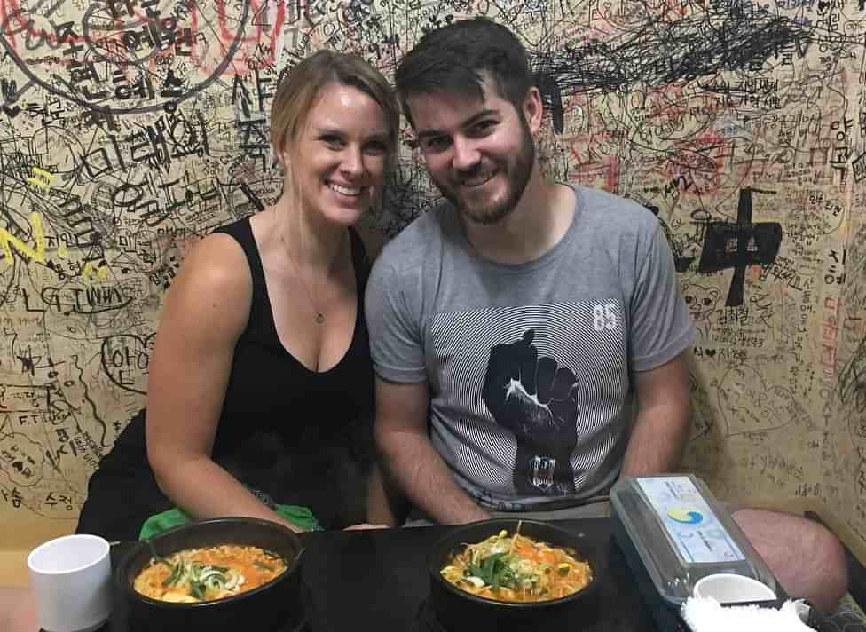
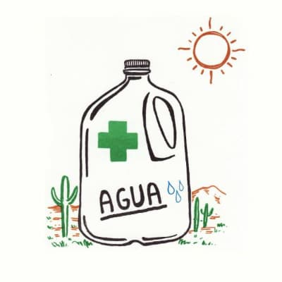

May 25th 2019
Albuquerque, NM

May 25th 2019
Albuquerque, NM
Ceremony
4pm
UNM Alumni Chapel
Alumni Memorial Chapel, Albuquerque, NM 87106
Reception
5:30-10pm
El Vado Motel
2500 Central SW Albuquerque, NM 87104
Where to Stay
More information to come
Registry

Visiting The Burque
Restaurants
Duran's Central Pharmacy - Great red chile
Garcia's - An Albuquerque Classic
Frontier - Classic Albuquerque diner
Golden Pride - Same owners as the frontier, best handheld breakfast burrito you'll ever eat
Vinaigrette - Soups and salads
Drinking
Bow and Arrow Brewing - Unsuspecting German-style beer hall with great local beer
Bosque Brewing - Great food and beers
Santa Fe Brewing - One of the original NM microbrews with a taproom in a shipping container
Marble Brewing - Popular local brewery with great outdoor seating
La Cumbre Brewing - Famous for their Elevation IPA
Apothocary Lounge - Swanky cocktails and great views of downtown and the mountains
Sites/Attractions
Sandia Tramway - the 2nd longest tramway in the world takes you to Sandia peak at 10,678 ft. in less than 15 minutes
Albuquerque Old Town - the Spanish Colonial heart of Albuquerque
Meow Wolf
- In Santa Fe, an out of this world immersive art exhibit/complex/story/experience
Historic Nob Hill - Rachel and Russ' neighborhood, shops, food and drinking along Route 66
Breaking Bad tour
- ride in Walt and Jesse's RV and see the filming locations to everyone's favorite dark TV drama
Nature
Rio Grande Bosque - Hike in the cottonwood forest surrounding the Rio Grande
Sandia Mountains - Hikings trails starting from the foothills of Albuquerque to as high as 10,000 feet
Petroglyph National Monument Trails - Hike along the foot of the West Mesa among millenia old petroglyphs
Culture
Indian Pueblo Cultural Center
- Museum and event space, traditional pueblo dances every weekend day
Coronado Historic Site
- Ancient pueblo ruins just outside of Albuquerque in Bernalillo, go insde a real Kiva!
Albuquerque Museum - History and Art museum dedicated to the story of Albuquerque